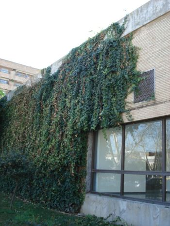
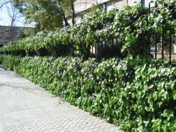

Flora
ornamental del
Campus de Reina Mercedes, Universidad de Sevilla. Ficha nº
69 - Versión
1
|
Hedera
cf.
maroccana McAll.,
Plantsman 15: 126 (1993) H.
helix auc., non L.
|
|
|
Hiedra,
yedra |
Trepadora
leñosa |
|
Planta
trepadora leñosa, perennifolia, con raíces
caulógenas dherentes; brotes y tallos jóvenes son
pelos estrellados. Hojas simples, alternas,
pecioladas;
lámina de 2-15 cm, en los brotes estériles
palmatilobada, con 3-9
lóbulos y base cordada, en los brotes fértiles entera y de base
truncada o redondeada, de color verde oscuro brillante
en el haz y más
pálido en el envés.
Inflorescencias en forma de umbelas simples laterales. Flores hermafroditas, reducidas,
pentámeras; pétalos amarillo-verdosos. Florece en
otoño.
Fruto de tipo baya, de color
amarilento al
principio y luego negro. |
 |
 |
Observaciones: Hasta hace poco se pensaba que había una sola especie (H. helix), pero estudios recientes han demostrado que existen varias especies que difieren principalmente por detalles microscópicos de la pelosidad de sus brotes. Hedera significa hélice. Maroccana es el patronímico latino de Marruecos, país de origen de esta especie. Las hiedras son un símbolo de antigüedad en Europa, otorgando a los edificios que recubren un cierto prestigio. La decocción de sus hojas se ha usado en compresas para aliviar dolores reumáticos y neurálgicos, como antipiojos y contra la celulitis. Sus bayas son venenosas. La determinación de las hiedras es difícil, pero creemos que las que crecen en el Campus pertenecen a esta especie, que es al parecer la más extendido en cultivo en nuestro país. |
|
Área de origen.- Marruecos |
|
|
Uso
en el campus.-
Como planta tapizante en algunos muros, vallas y
fachadas. |
Localización.- CICA (SE); Matemáticas
(patio); Instituto
de Idiomas
ETSI
Informática: Semipatio y Jardín SE |
|
Juan
Manuel Ureña Pérez &
Carlos
Romero Zarco (2007) |
|